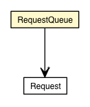

jsl.modeling.elements.resource
Class RequestQueue

java.lang.Object
 jsl.modeling.elements.resource.RequestQueue
jsl.modeling.elements.resource.RequestQueue
public class RequestQueue
- extends Object
This class encapsulates the holding of Requests for
resources.
|
Field Summary |
protected List<Request> |
myRequests
Holds requests that are waiting for some
units of the resource |
| Methods inherited from class java.lang.Object |
clone, equals, finalize, getClass, hashCode, notify, notifyAll, toString, wait, wait, wait |
myRequests
protected List<Request> myRequests
- Holds requests that are waiting for some
units of the resource
RequestQueue
public RequestQueue()
add
public void add(Request request)
- Adds the request to the list of waiting requests
based on the Comparable interface for Request
- Parameters:
request -
size
public int size()
set
public Request set(int arg0,
Request arg1)
remove
public Request remove(int arg0)
remove
public boolean remove(Request arg0)
listIterator
public ListIterator<Request> listIterator(int arg0)
listIterator
public ListIterator<Request> listIterator()
lastIndexOf
public int lastIndexOf(Request arg0)
iterator
public Iterator<Request> iterator()
isEmpty
public boolean isEmpty()
indexOf
public int indexOf(Request arg0)
get
public Request get(int arg0)
containsAll
public boolean containsAll(Collection<Request> arg0)
contains
public boolean contains(Request arg0)
clear
public void clear()
Copyright © 2012 Manuel D. Rossetti. All Rights Reserved.